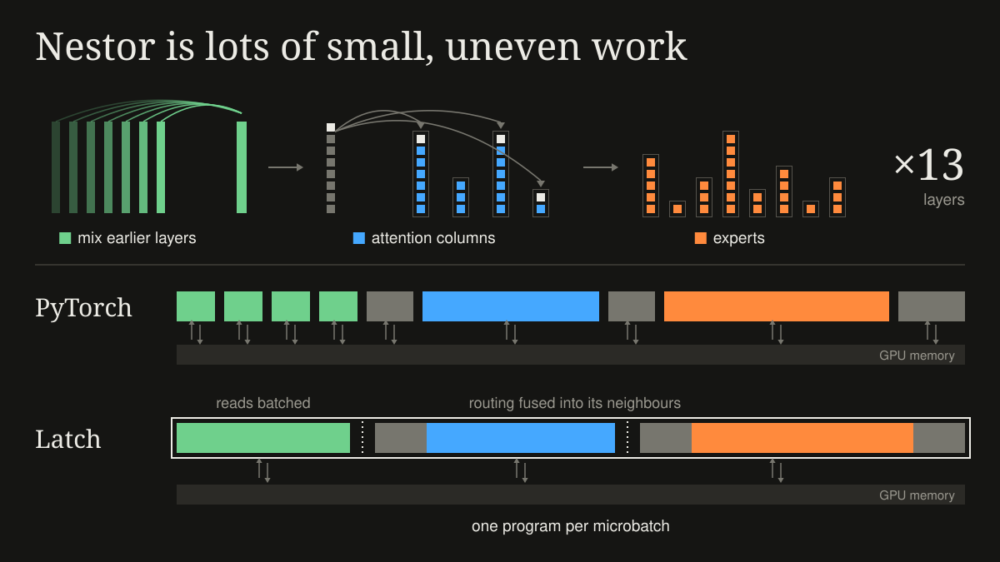
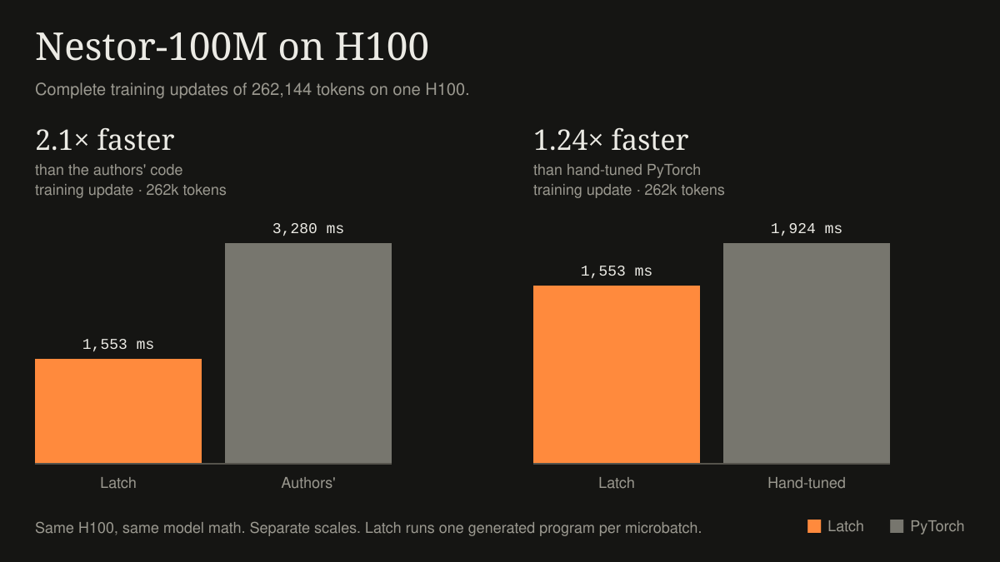
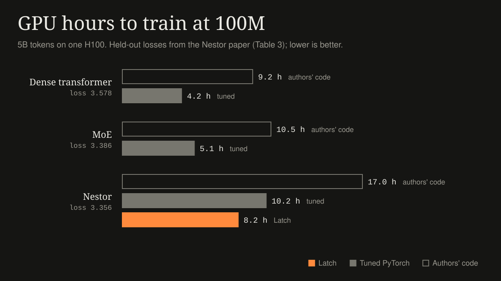

Training Nestor with Latch
Training an unusual model twice as fast.
Latch generated training megakernels from the PyTorch training code for Nestor, a new language model architecture. The generated programs cover the forward pass, loss, backward pass and optimizer update. Complete training updates ran 2.1× faster than the authors’ implementation on the same H100.
Each training update processes 262,144 tokens. The megakernel takes 1.55 seconds per update, and the authors’ code takes 3.28. The new build matched learning in 300-update comparisons from both fresh and trained weights.

Why Nestor
When I introduced Latch, I wrote that an unusual learning algorithm can leave you with a systems project to finish before you can test it. Nestor is a good example. It lets each token choose which parts of the model it uses:
- Tokens choose their attention. Each block has eight attention “columns”, and each token joins between three and eight of them. The groups of tokens that attend to each other change from batch to batch.
- Tokens choose their experts. Each column has its own experts as well as a shared pool, and every expert gets a different number of tokens.
- There’s no residual stream. Each layer reads a learned mix of the layers before it.
GPUs do best with a few large operations of the same shape. A Nestor training step is thousands of small operations whose sizes depend on the routing, and its attention heads are only 30 numbers wide. The authors’ PyTorch code issues about 87,000 GPU operations per update.


This is the kind of model I built Latch for. I adapted Nestor’s training code to the PyTorch subset Latch supports. The generated program runs once per microbatch, eight times per update, and the last run also updates the weights.
A stronger PyTorch comparison
I also wanted to know how much of the 2.1× you could get by improving the PyTorch implementation, since it would be easy to give the compiler credit for work you could do without it.
So I tuned that version too. I streamed the vocabulary loss instead of storing the full logits, froze Python’s garbage collector, removed the distributed wrapper (there’s only one GPU), and used bigger microbatches. PyTorch got 1.7× faster, down to 1.92 seconds per update. Latch’s program is still 1.24× faster than that, on the same GPU and with the same model math.


Nestor and MoE
The Nestor paper compares models at equal compute. At 100M parameters, Nestor reaches the same loss as a mixture-of-experts transformer with about 17% less compute, and it stays ahead up to 1B.
Compute and GPU time aren’t the same thing, though. Nestor’s routed operations are small, and GPUs run them slowly. I timed the paper’s dense and MoE baselines on the same H100 and tuned them the same way as Nestor’s PyTorch version.


A tuned Nestor step in PyTorch takes 2× as long as a tuned MoE step, and Latch gets it to 1.6×. At this size, Nestor’s advantage per FLOP doesn’t show up in GPU time yet. Closing the rest of that gap is what I’m working on next.
Where the time went
The biggest improvement came from giving each warp more memory loads to work on at once. Nestor does a lot of gathers, copies and small reductions. When a warp waits for each load to finish before issuing the next, most of the GPU’s memory bandwidth sits idle. Generating code that keeps more loads in flight saved about 180 milliseconds per update.
The other changes removed work between operations. When two backward matrix products get added together, Latch now computes them as one larger product. Chains of row operations keep their intermediate values in registers, and attention’s backward pass takes one pass instead of two. Along with fixes to the optimizer and vocabulary head, these brought Latch from 1.90 to 1.55 seconds per update.

One program isn’t automatically faster. Running two microbatches side by side on separate halves of the GPU helped only a little, since both halves share the same memory bandwidth. In earlier tests, splitting the program into separate kernels was sometimes faster, because a long program pays for instruction cache misses and synchronization.
What I’m most interested in is making these improvements reusable, so I can change the model and regenerate the program without redoing this work. There’s more to do before these optimizations apply across the models Latch supports, and contributions are welcome.
Many thanks to the Nestor team for open-sourcing their code and training recipe.